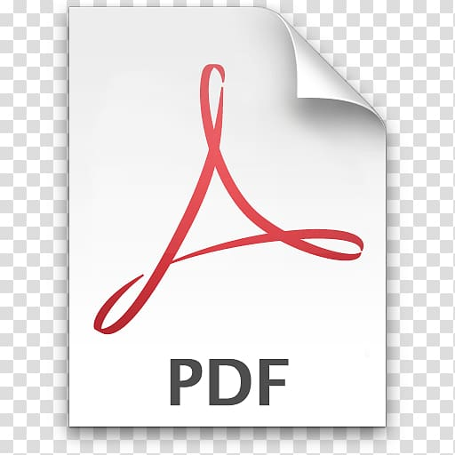

<div class="container">
  <div class="card shadow mb-4">
    <div class="card-body">
      <h1>Liste des étudiants</h1>
      <button mat-fab color="primary" style="position: relative;">
        
      </button>
      <table width="100%" id="pdfContent">
        <thead>
          <tr>
            <th>CIN</th>
            <th>Nom</th>
            <th>Prénom</th>
            <th>Date de naissance</th>
            <th>Groupe</th>
            <th>Moyenne</th>
            <th>Resultat</th>
            <th>Action</th>
             <th>Abscences</th>
            <th>Etat </th>
          </tr>
        </thead >
       
        <tbody  *ngFor="let e of tab_etu">
          <tr >
            <td>{{e.id}}</td>
            <td>{{e.nom}}</td>
            <td>{{e.prenom}}</td>
            <td>{{e.dateNaiss | date: 'dd/MM/yyyy'}}</td>
            <td>{{ e.grp?.nomGrp }}</td>
            <td>{{e.moy }}</td>
            <td [ngStyle]="lesserThan(e.moy) ? redoubleStyle : null">
              <ng-container *ngIf="greaterThan(e.moy); else redoubleTemplate">
                Admis
              </ng-container>
              <ng-template #redoubleTemplate>
                Redouble
              </ng-template>
            </td>
            <td>
              <div class="example-button-row">
                <div class="example-flex-container">
                  <div class="example-button-container">
                    <button mat-fab color="primary" aria-label="Example icon button with a delete icon" (click)="suppEtudiant(e)">
                      <mat-icon>delete</mat-icon>
                    </button>
                  </div>
                </div>
              </div>
              <button mat-icon-button color="primary" aria-label="Edit" [routerLink]="['/updateEtudiant',e.id]">
                <mat-icon>edit</mat-icon>
              </button>
            </td>
            <td> <button mat-fab color="warn" aria-label="Add Absence" (click)="incrementAbsence(e)">
            <mat-icon>add</mat-icon>
          </button>
          Absences: {{ e.absenceCount }}
</td><td>
           <ng-container *ngIf="e.isEliminated; else notEliminatedTemplate" style="color: red;">
    Eliminated
  </ng-container>
  <ng-template #notEliminatedTemplate>
    Not Eliminated
  </ng-template></td>
          </tr>
        </tbody>
      </table>
    </div>
  </div>
</div>
